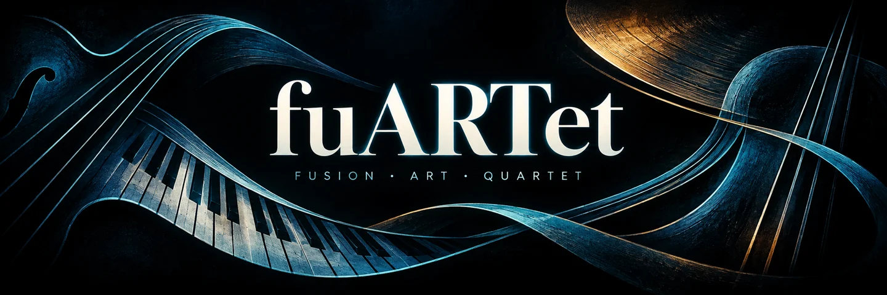
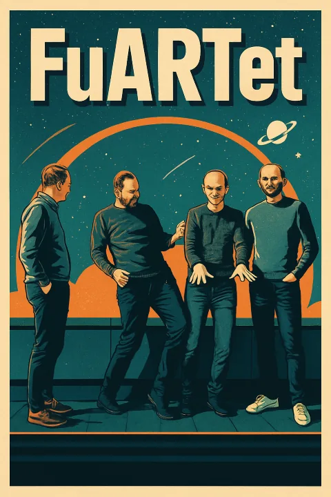
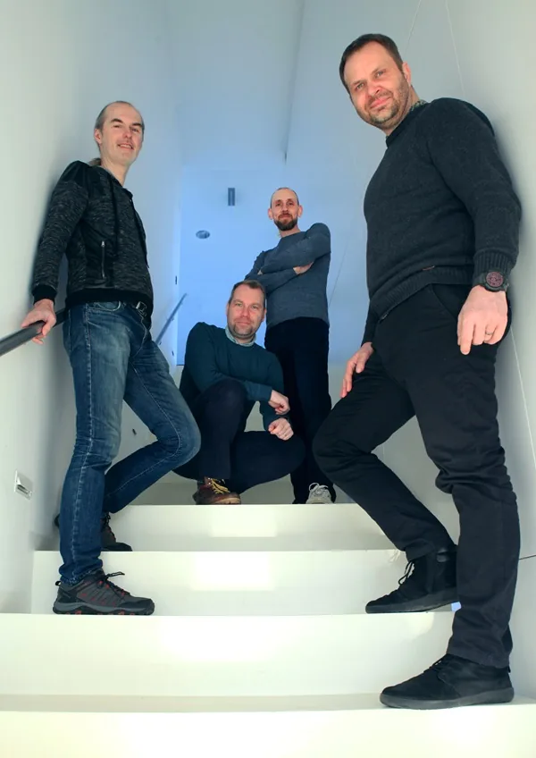
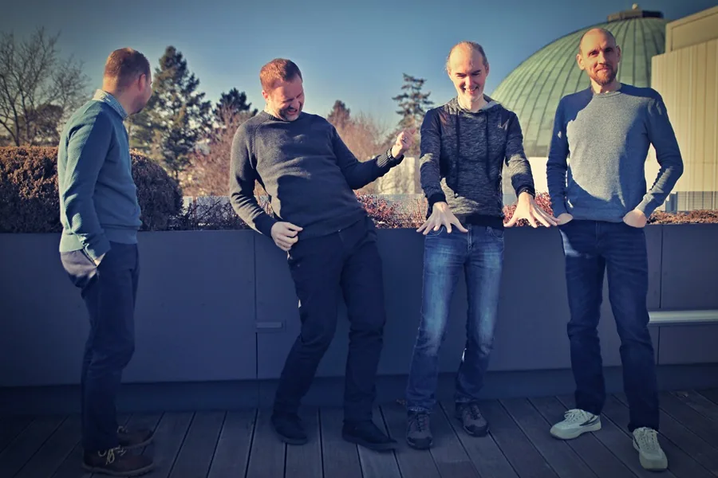
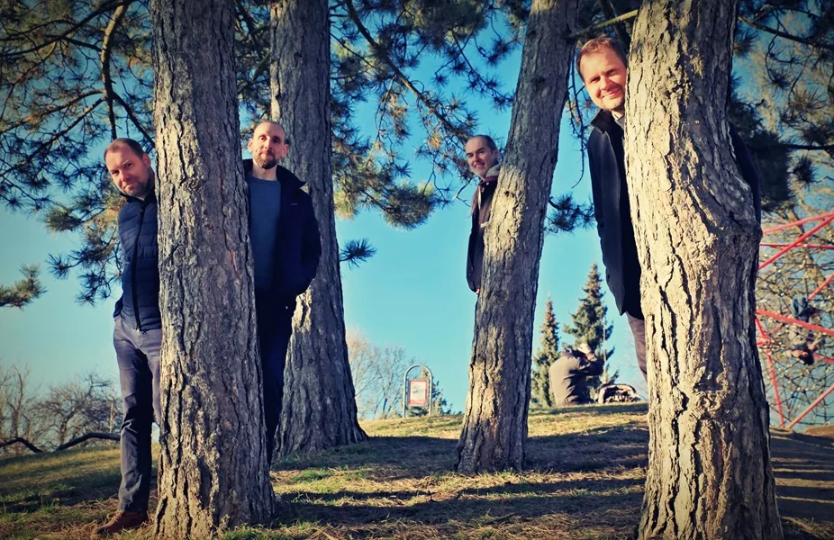
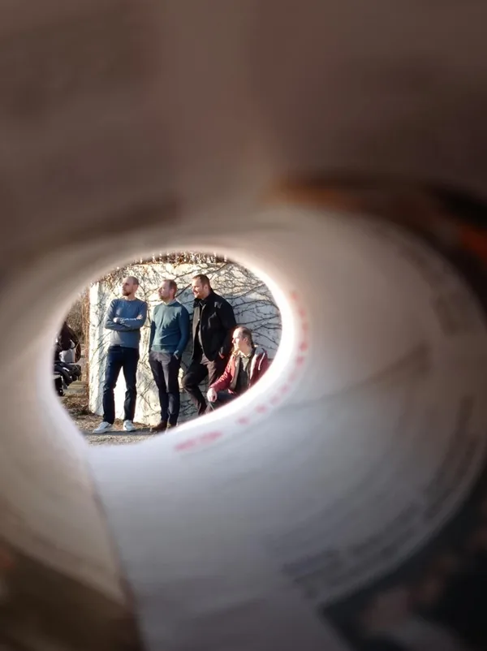

fuARTet | Fusion | Quartet | fuartet.cz
Vlastní instrumentální hudba na pomezí funku, rocku a jazzu.
Události
Naše nadcházející koncerty si můžete prohlédnout na 🔗našem Facebook profilu.
Pátek 16. října 2026 v 20:00 --- Jazz In Hall | Zábřeh
Pátek 09. října 2026 v 19:00 --- KUPE | Opava
Archiv koncertů 2025—2026
PŘELOŽENO na Pátek 4. září 2026 v 19:30 --- Víno a Jazz, Městský park | Kyjov
Pátek 12. června 2026 --- Zahrada U Sosny | Brno
Pátek 17. dubna 2026 --- Koncert v Dobrém místě | Újezdec - Uherský Brod
Pátek 27. března 2026 --- U Kouřícího Králíka | Brno
Sobota 7. února 2026 --- Kavárna Variace | Olomouc
Pátek 16. ledna 2026 --- Klub Oko | Havlíčkův Brod
Sobota 13. prosince 2025 ve 20:00 --- Kulatá brána | Hodonín
Sobota 11. října 2025 ve 20:00 --- D club | Jihlava
Sobota 09. srpna 2025 ve 14:00 --- Festival na Hnojišti (Ratíškovice)
Pátek 08. srpna 2025 v 19:00 --- Ponava Cafe, Lužánky (Brno)
Pátek 20. června 2025 ve 20:00 --- FuARTeT U kouřícího králíka (Brno)

Hudba
Videa
Náš YouTube kanál ↗Další video 1
Otevřít na YouTube ↗Další video 2
Otevřít na YouTube ↗Další video 3
Otevřít na YouTube ↗O nás
Instrumentální quartet, hrající výhradně vlastní skladby, funkové rytmy, rockovou kytaru, bohatý syntetizátor, stylově od country přes funky po jazz, prostě fusion stylů.

První verze této kapely nicméně spatřuje světlo světa kolem roku 2014 pod názvem Ginger Head Instrumental a snaží se vymanit ze škatulí mainstreamu.


Historie kapely se traduje v podstatě do roku 2008, kdy již vznikly základy některých písní a celková myšlenka. Časem jsme ale museli dozrát přes několik jiných hudebních těles a žánrů.

Postupem času jsme se ustálili na počtu čtyř muzikantů při kytaře, klávesách, base a bicích. Bereme často na koncert hosty a sólisty a nebojíme se improvizace ani standardních kusů.
Hrajeme hlavně pro zábavu a v naší hře se snoubí to, co chceme v hudebním kolektivu sdílet. A proto právě vznikl instrumentální quartet, hrající výhradně vlastní instrumentální skladby, funkové rytmy, rockovou kytaru, bohatý syntezátor, stylově od country po jazz, prostě crossover.
Členové kapely
Tomáš Borovička --- kytara
Kytarista, hudebník a lektor hry na akustickou i elektrickou kytaru. Hudbě se věnuje od dětství a má zkušenosti z různých žánrů - od folku a blues-rocku po funk a fusion. Kromě koncertování se věnuje individuální výuce kytary, workshopům a jam sessions.
Jan Mendelsson --- klávesy
Muzikant, autor písní a skladeb, hráč na klavír a elektronické klávesové nástroje. Ve své technice navazuje nejen na jazzovou tradici, ale také na progresivní rock a bohaté harmoničnosti. Ve skladbách Jana se mísí improvizace, groove i melodická citlivost.
Lukáš Macur --- basa
Baskytarista s hudební zkušeností z různých projektů včetně živých vystoupení a jam sessions. Hráč na baskytaru při hudebních setech s dalšími muzikanty (Under-cover Alanis Morissette Tribute, spolupráce s Mihu).
Viktor Martinkovič --- bicí
Bubeník a pedagog působící na Základní umělecké škole Hodonín, kde vyučuje v hudebním oboru. Aktivně se podílí na koncertní činnosti školy, spolupracuje s Komorním orchestrem Jana Noska a je zapojen i do mezioborových projektů, včetně literárně-dramatického oboru.
Pro pořadatele
fuARTet je instrumentální kvartet propojující funk, rock a jazz. Ve složení kytara, klávesy, baskytara a bicí hraje vlastní skladby, ve kterých se potkávají výrazné rytmy, melodie a improvizace. Kořeny kapely sahají do roku 2008; od roku 2014 vystupovala pod názvem Ginger Head Instrumental.
{kind=link}
{kind=link}
Technické požadavky a podmínky vystoupení domluvíme individuálně. Napište nám ohledně koncertu.
Kontakt
Chcete fuARTet na svém pódiu? Napište nám termín, místo a typ akce, nebo zavolejte.
- Telefon: +420 731 657 102
- E-mail: borovicka.t@gmail.com